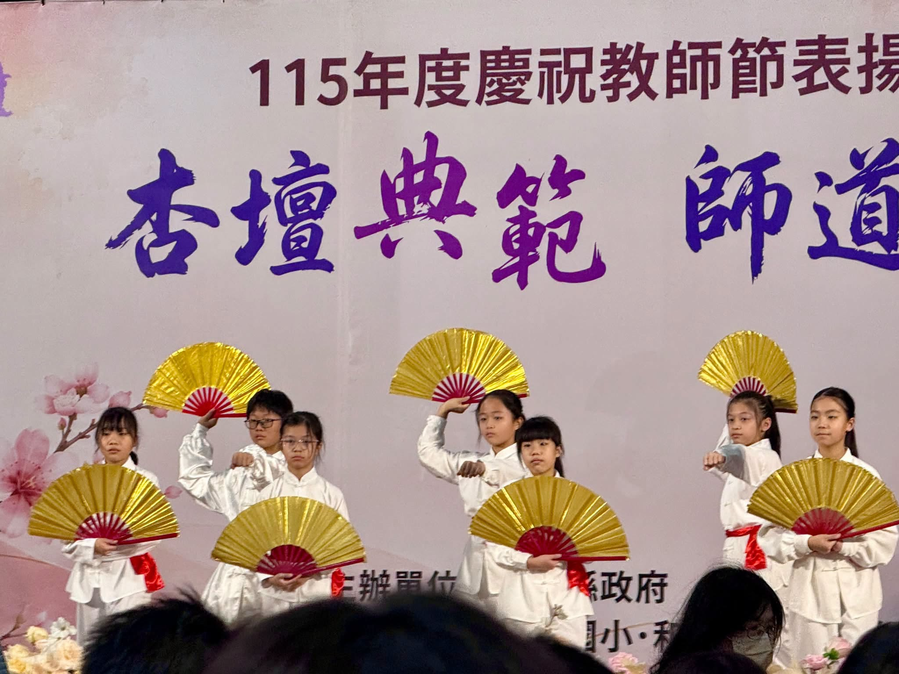

How long is twenty or thirty years? It's sending off one graduating class after another, watching young faces slowly grow up. It's walking onto campus morning after morning, until, without quite noticing, education becomes an important part of your life — no, it becomes your whole life.
Today, at a grand ceremony hosted by Hodong Elementary, Changhua County held its SY115 Teachers' Day Recognition. Several Hsinmin colleagues stepped forward to receive their awards in person from County Magistrate Wang Hui-mei — recognition earned over years of quiet, steady service.
- 30 yrsChu Li-chun, Teacher30年資深優良教師｜朱麗君老師
- 20 yrsDirector Chan Yi-liang20年資深優良教師｜詹益樑主任
- 20 yrsChen Min-chi, Teacher20年資深優良教師｜陳閔祺老師
- 20 yrsCheng Yen-ching, School Nurse20年資深優良護理人員｜程艶卿護理師

A certificate reads "20 years" or "30 years," but behind those numbers live so many stories — hands once held, children once taught, late nights spent for the sake of one small thing. It felt ordinary at the time; only years later, looking back, do you realize those small moments had already woven themselves into the most precious years of a teaching life.
Maybe the most moving moment of all comes years later, somewhere unexpected, when you suddenly hear a familiar voice call out — "Hello, teacher!" That's the moment you realize: you walked beside a child for one small stretch of their life, and class after class of children have, in turn, walked beside you through a long stretch of yours.
「老師好！」
那一刻才發現，我們陪孩子走過人生的一小段路，孩子也陪我們走過生命中很長的一段時光。
Twenty years, thirty years — not just years of service, but a stretch of youth worth treasuring. Congratulations to every Hsinmin colleague honored today, and let today's applause go out to everyone, everywhere, still walking this road with heart. 🎉💖
為教育歲月喝采・為新民夥伴驕傲 👏🏆
一段走了20、30年的教育路，二三十年究竟有多長？是送走了一屆又一屆的孩子，看著一張張稚嫩的臉龐慢慢長大，是無數個早晨走進校園，不知不覺，教育也成為生命中很重要的一部分……不，教育，應該已成為生命的全部了😊
今天和東國小盛大舉行✨彰化縣115年度優良教師表揚✨新民有多位夥伴接受🌟王惠美縣長🌟親自頒獎，接受這份屬於歲月的肯定❤️
🏆 30年資深優良教師｜朱麗君老師
🏆 20年資深優良教師｜詹益樑主任、陳閔祺老師
🏆 20年資深優良護理人員｜程艶卿護理師
一張獎狀上寫的是20年、30年，但數字背後收藏的其實是好多好多故事。曾經牽過的手、曾經教過的孩子、曾經為了一件小事忙到很晚的日子……當下或許平凡，多年以後回頭看，才發現這些點點滴滴，早已串成了我們最珍貴的教育歲月❤️
最讓人感動的，也許是多年以後，在某個不經意的地方，突然聽見一聲——「老師好！」那一刻才發現，原來我們陪孩子走過人生的一小段路，而一屆又一屆的孩子，也陪著我們走過生命中很長的一段時光❤️
謝謝一路走來的自己，也謝謝一路同行的夥伴，一起忙碌、一起歡笑，也一起為孩子努力著❤️
20年、30年，不只是年資，更是一段值得好好珍藏的青春❤️
恭喜新民夥伴！💐 也把今天的掌聲，送給每一位始終在教育路上認真前行的人。
Tap 🔊 to listen · 點喇叭聽發音
Thirty years of teaching takes real dedication.三十年的教學生涯需要真正的奉獻。
A teaching career is a long journey with many students.教育生涯是一段和許多學生同行的漫長旅程。
Every school year leaves behind its own memory.每個學年都留下屬於自己的回憶。
These teachers treasure every year they spent with students.這些老師珍惜和學生相處的每一年。
The county gave a special honor to long-serving teachers.縣政府特別表揚服務多年的老師。
A good colleague works and laughs alongside you.好的夥伴會和你一起工作、一起歡笑。
Match the word to its meaning
把英文和中文配對
Matched 配對成功：0 / 6